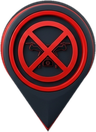

メンバー向けです。合言葉はLINEにあります。
先に知っておきたいこと
実際に申請して飛ばした人が書いた話が、そのまま入っています。
燃料式のドローンと、本体やバッテリーが大きい機体は、ロープウェイに乗せられません。
これを知らずに行くと、標高2,600mまで上がってから引き返すことになります。入林届は南信森林管理署、連絡書は中央アルプス観光へ。書類は2本立てです。
2026年7月に実際に飛ばした記録より
許可証は発行されません。書類が受理された時点で承認、という扱いです。
「許可証が届かない」と待っていると、当日を過ぎます。費用は使用料1,100円＋振込手数料165円＋郵送430円で、およそ1,700円。
2026年7月に実際に飛ばした記録より
灯台の上は飛ばせません。海上保安庁の管轄だと言われたそうです。
浜辺からなら飛ばせます。こういう「行ってみて言われたこと」が、いちばん値打ちがあります。
メンバーの投稿より
地図に出るもの
ピンの色と絵で、その場所がどういう場所かが分かります。
ところ

飛ばせない
飛行禁止空域7種類（空港のまわり・管制圏・民間訓練試験空域・特別管制区・進入管制区・レッドゾーン・イエローゾーン）／人口集中地区（DID）／送電線／空港・飛行場。
空域は国土交通省航空局と警察庁のデータそのものです。目安の円ではありません。場所を開くと「何メートルより上が制限か」まで出ます。
どんなところがあるか
場所ごとに、空撮動画も付けてあります。


はじめての方へ
途中で赤い警告が出ますが、こわれてはいません。2回押せば越えられます。
入り方（1分）
- 上の地図をひらくを押します
- Googleでログインします。ふだん使っているアカウントで構いません
- 「このアプリは Google で確認されていません」と赤い字が出たら 詳細 → …（安全ではないページ）に移動 の順に押します
- アクセスを求められたら 許可
- 合言葉を入れます（LINEにあります）
なぜ赤い警告が出るのか。 仲間内だけで使う道具なので、Googleの審査を通していないからです。 審査には会社の登録や年ごとの費用が要ります。 中身は Google のサーバーで動いていて、書いたものはみんなの表に入るだけです。 いつでも 不具合報告・要望 から聞いてください。